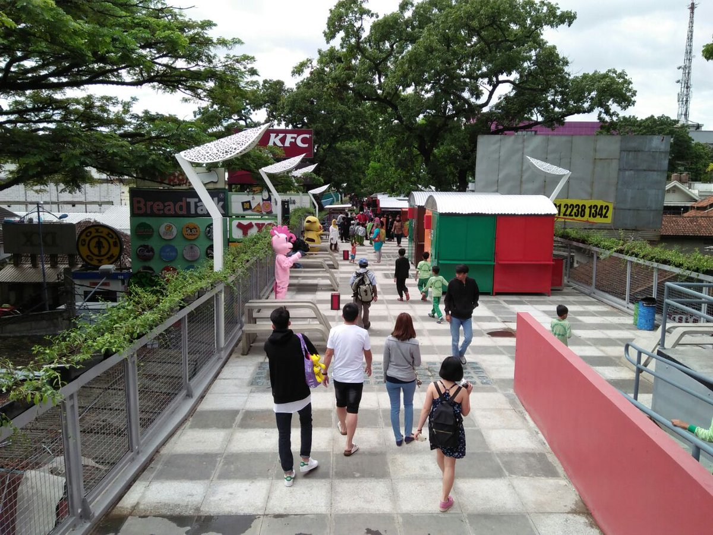
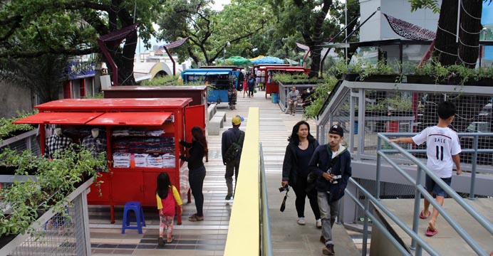
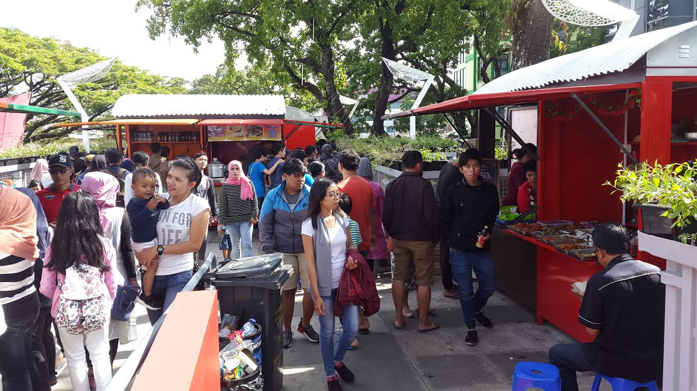
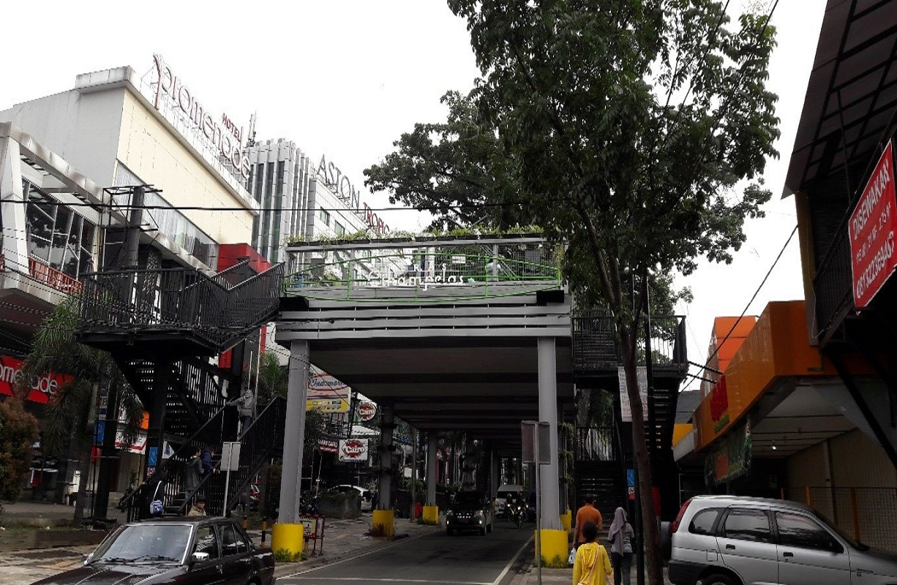
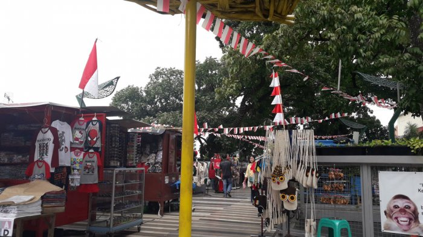
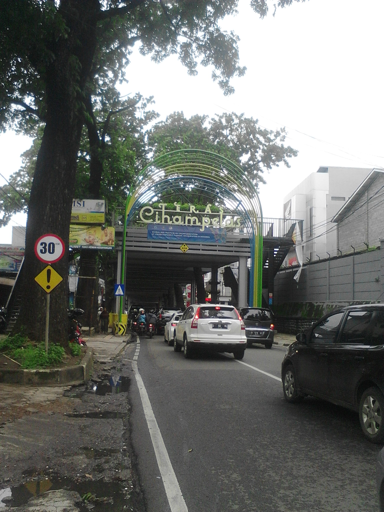
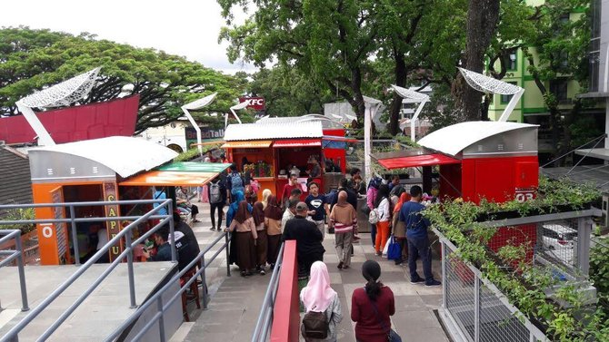
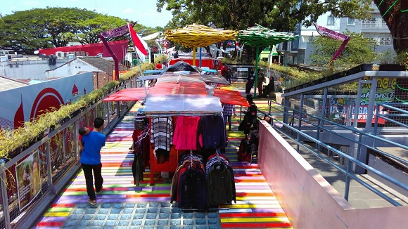

Apakah anda sudah tahu bahwa ada Tempat Wisata di Bandung yang Baru yang saat ini tengah nge-Hits sebagai tempat jalan-jalan dan nongkrong, tempat belanja dan berwisata kuliner ? Ya, Objek wisata baru itu bernama Teras Cihampelas atau populer dengan julukan Skywalk Cihampelas Bandung.
Nah, seperti apakah daya tarik wisata di jalan Cihampelas, Kota Bandung ini ? apa saja fasilitas wisata yang bisa anda temukan di Teras Cihampelas ini ? dimana alamat dan pukul berapa jam bukanya ? yuk kita simak.
SkyWalk Cihampelas Bandung
Berbicara seputar Tempat Wisata Yang Menarik di Bandung, maka seperti tidak akan pernah bosan dan berhenti kita membahasnya. Selalu ada saja setiap waktu tempat-tempat yang baru, unik, bagus dan pastinya akan mengundang rasa penasaran untuk mendatanginya.
Jika anda warga perkotaan seperti jakarta selama ini berburu Wisata Bandung yang terfavorit dan terkenal, biasanya mencari Tempat Wisata Alam di Bandung yang eksotis dan romantis seperti mengunjungi sejumlah Tempat Wisata di Lembang dan Juga Tempat Wisata di Ciwidey dan yang lainnya.
Nah, saat ini di dalam kota Bandung telah hadir sebuah Tempat Wisata yang baru dan merupakan yang pertama ada di indonesia, sebuah tempat wisata yang unik lain dari yang lain, yaitu Teras Cihampelas atau Skywalk Cihampelas.
Berbicara seputar Jalan Cihampelas, maka selama ini kita pastinya sudah sangat mengenal sebagai salah satu destinasi wisata favorit warga kota bandung dan juga wisatawan, baik dalam dan mancanegara.


Nama jalan di kota bandung ini dikenal sebagai salah satu destinasi Tempat Wisata Belanja di Kota Bandung yang sudah sangat terkenal bahkan legendaris, sebagai pusat wisata belanja aneka produk celana jeans yang berkualitas dan murah.
Namun perlu anda ketahui juga, bahwasanya seiring perkembangan zaman dan tuntutan kota Bandung sebagai salah satu kota Jasa, Kota Wisata dan Bisnis, menjadikan kawasan Jalan Cihampelas ini terus berkembang lebih maju dengan banyaknya dibangun berbagai fasilitas.
Di Jalan Cihampelas Bandung, anda bisa mendapati banyak Toko atau Tempat yang menjual Oleh-Oleh Bandung dan Souvenir, kemudian menjadi pusat Tempat Wisata Kuliner di Bandung dengan hadirnya Cafe dan Resto serta lokasi Tempat Wisata Hiburan Malam di Bandung berupa Tempat Clubing di Bandung.
Keberadaannya semakin menjadi penting dan populer, setelah di jalan Cihampelas berdiri sebuah Tempat Wisata Belanja berkonsep wawasan lingkungan ( Green Consep ) yaitu sebuah Mall di Bandung yang saat ini begitu Populer yaitu Cihampelas Walk alias Ciwalk.

Sebagai salah satu pusat wisata yang ada di kota Bandung, di Jalan Cihampelas ini juga dikenal sebagai salah satu pintu keluar masuknya wisatawan, karena di sekitar sini terdapat beberapa pool dan Tour Travel Bandung.
Nah, salah satu nama jalan legendaris di kota Bandung selain Jalan Braga Bandung yang selama ini dikenal sebagai sebuah kawasan yang selalu ramai dan sesak dipadati pengunjung, terutama saat libur Weekend dan musim liburan, sehingga sering terjadi kemacetan.
Kini, di bawah kepemimpinan walikota Bandung Ridwan Kamil, seorang pria muda lulusan perguruan tinggi terkemuka di kota Bandung ITB, tempat ini disentuhnya, mulai dirubah citranya menjadi sebuah kawasan yang tertib, tertata, tidak macet dan nyaman dikunjungi, dengan dibangunnya Skywalk Cihampelas.
Ya, selamat datang di Teras Cihampelas atau Skywalk Cihampelas Bandung, tempat yang akan berikan anda alternatif tempat wisata di bandung dengan konsep baru dan akan berikan anda pengalaman wisata luar biasa, di tempat yang berlokasi di Jalan Cihampelas Kota Bandung ini.

Sejarah Pembangunan SkyWalk Bandung
Proyek jembatan pedestrian di atas udara atau Skywalk Cihampelas Bandung ini dikerjakan oleh kontraktor PT Likatama Graha Mandiri, dengan menghabiskan anggaran pembangunan sekitar 48 milyar.
Pembangunan Skywalk Cihampelas Bandung ini sudah diwacanakan sejak 2014 yang lalu dan seharusnya ditargetkan selesai di tahun 2016 yang lalu, namun dengan terkendala berbagai halangan, salah satu megaproyek pemerintahan kota Bandung ini pun akhirnya rampung dan diresmikan di awal tahun 2017 yang baru lalu.
Panjang kawasan Skywalk Cihampelas Bandung nsediri adalah 450 meter, dengan lebar jalan mencapai 9 meter serta tinggi dari permukaan jalan sekitar 4,6 meter, dengan bahan konstruksi rangka dari baja jenis H-Beam dan beton di bagian lantai, dengan alas granit dan kayu.
Wacananya, Proyek Skywalk Bandung ini akan membentang dari Tamansari hingga Jalan Cihampelas, yaitu mulai dari arah RS Advent hingga sebuah Hotel di Bandung Promenade, dengan kekuatan setiap m2 nya akan mampu menahan berat sebanyak 300 orang.
Kabar terbaru, pada tahun 2017 ini pula pemerintah kota Bandung telah menyiapkan anggaran tidak kurang dari 30 milyar dari APBD nya untuk melanjutkan jembatan ini hingga ke jalan Pasupati, serta mengintegrasikannya dengan Teras Cikapundung dengan salah salah mega proyek fasilitas Pariwisata Bandung yaitu Cable Car.

Fungsi SkyWalk Cihampelas Bandung
Setelah sukses dengan berbagai proyek dengan tujuan mengembalikan kota Bandung sebagai ” Kota Kembang ” dan juga ” Paris Van Java “, sebuah kota yang nyaman ditinggali oleh warganya dan nyaman dikunjungi oleh pelancong, walikota bandung Kang Emil sepertinya tidak lelah untuk terus berinovasi.
Setelah sukses merevitalisasi sejumlah Taman di Kota Bandung sebagai ruang publik hijau seperti dibangunnya tempat wisata di pinggir sungai Teras Cikapundung, Lapangan Tegalega kemudian Taman Lansia, Taman Jomblo, Taman Film , Peta Park Bandung hingga Alun-Alun Kota Bandung di sekitar Masjid Raya Bandung, maka dilanjutkan inovasi lainnya membangun Teras Cihampelas ini.
Skywalk Cihampelas sendiri dibangun dengan tujuan, selain sebagai bagian rencana besar tata kelola ruangan di kota Bandung untuk semakin tertaata dan tertib, juga difungsikan sebagai area jalur pejalan kaki, serta lokasi penertiban sekaligus penampungan sejumlah Pedagang Kaki Lima (PKL) yang selama ini menempati sepanjang jalur wisata belanja di jalan Cihampelas.
Dengannya maka kehadiran jembatan di atas jalan Cihampelas ini akan mengurangi penumpukan kendaraan di kawasan cihampelas yang selama ini dikenal macet, sehingga pengunjung yang membawa kendaraan bisa memarkirkannya di jalan Tamansari, kemudian berjalan melalui Skywalk ini untuk berwisata di jalan Cihampelas.
Sehingga olehnya, para pejalan kaki bisa berjalan dengan aman dan nyaman dan kendaraan pun bisa anda diparkir di tempat yang aman serta kendaraan yang melintas pun bisa melaju tanpa tersendat oleh pejalan yang lalu lalang dan menyeberang serta para pedagang di atas trotoar jalan lagi.

Daya Tarik Wisata SkyWalk Cihampelas Bandung
1.Ikon Baru Wisata Kota Bandung
Kehadiran dari Teras Cihampelas atau Skywalk Cihampelas ini telah menjadikannya sebagai salah satu dari Ikon Pariwisata Kota Bandung yang baru, selain karena konsep dan Design tempat Skywalk seperti ini baru pertama di indonesia, juga melihat fungsinya sebagai sebuah kawasan wisata terpadu.
Mengunjungi tempat wisata di jalan Cihampelas ini, maka anda akan semakin mengenal dan melihat dari dekat, bagaimana keindahan arsitektur bangunan, kawasan yang nyaman di tinggali serta lengkapnya fasilitas yang akan membuat anda betah berlama-lama jalan-jalan di sana.
2.Green Konsep Area
Untuk menikmati keindahan kota berjuluk ” Kota Kembang ” selama jalan-jalan ke Bandung, kini alternatifnya semakin beragam dengan kehadiran Skywalk Cihampelas ini.
Di sini pengunjung tidak perlu khawatir kulitnya terbakar oleh matahari, sebab sepanjang jembatan ini anda akan melihat dan terlindungi dengan rimbunnya pohon-pohon yang berdiri di sepanjang jalan ini. ‘
Di atas jembatan dibangun jalur hijau yang menyerupai taman-taman kecil di kota bandung yang asri di samping kanan kiri jalannya, sehingga suasana pun menjadi adem dan udara di sana cukup sejuk.
3.Jalur Pedestrian dan Tempat Pedagang Kaki Lima Bandung
Seperti sudah sedikit dijelaskan di atas bahwa design skywalk yang utama adalah selain merupakan kawasan nyaman bagi para pejalan kaki, juga sebagai lokasi baru tempat jualan para pedagang kaki lima yang biasanya berjualan di sepanjang jalan Cihampelas selama ini.
Di sini terdapat tidak kurang dari 192 lapak PKL yang tertata sedemikian rupa di tahap pertama dan ke depannya, menurut Ridwan Kamil akan kembali dilanjutkan dengan program penempatan Pedagang Kaki lima di jilid 2 Skywalk Cihampelas.
Bahkan ke depan sedang dibuat konsep, dimana sejumlah pertokoan yang berjajar di bawah Skywalk ini, yaitu di sepanjang jalan Cihampelas, nantinya akan dinaikan bangunannya hingga berlantai 3, yang otomatis akan memudahkan pengunjung dari Skywalk masuk untuk berbelanja dari atas langsung.

Fasilitas di Skywalk Cihampelas Bandung
Berbicara seputar fasilitas wisata yang bisa anda nikmati selama jalan-jalan di Teras Cihampelas ini, maka secara umum tempat ini dibagi ke dalam 3 zona.
Zona tersebut adalah area Taman Bunga, kemudian toko souvenir seperti tempat jualan kaos dan berbagai macam pernak-pernik khas kota bandung serta tentunya tempat wisata kuliner yang menjajakan aneka menu hidangan, mulai dari makanan khas bandung, Jawa Barat dan nusantara bahkan ke depan bisa jadi mancanegara.
Untuk lebih memberikan kenyamanan dan keamanan bagi pengunjung, Skywalk Cihampelas Bandung ini pun telah dilengkapi fasilitas Pos Satuan Pengamanan ( Satpam ), kemudian juga Toilet Umum,Mushola serta bagi wisatawan tersedia pos informasi, hingga Lift bagi pengunjung diabilitas pun telah disediakan.
Berkunjung ke sini, anda bisa melakukan banyak hal atau kegiatan yang asyik berbeda dengan jalan pada umumnya, mulai dari jalan-jalan, berfoto, makan dan yang lainnya, tanpa anda khawatir diserempet oleh kendaraan lagi.

ALAMAT SKYWALK CIHAMPELAS BANDUNG
Jalan Cihampelas No 123-131, Cipaganti, Coblong, Kota Bandung Jawa Barat 40131, Indonesia
JAM BUKA SKYWALK CIHAMPELAS BANDUNG
Waktu operasional Teras Cihampelas Bandung ini adalah setiap hari, Senin Hingga Minggu, mulai Pukul 08.00 – 22.00 WIB
HARGA TIKET MASUK SKYWALK CIHAMPELAS BANDUNG
Ini adalah kawasan bebas atau tempat yang disediakan untuk kenyamanan warga kota bandung dan juga pelancong yang sedang jalan-jalan ke kota bandung, sehingga tidak dipungut biaya masuk alias Gratis.
RUTE JALAN MENUJU SKYWALK CIHAMPELAS BANDUNG
Untuk mengakses lokasi Skywalk Bandung di jalan Cihampelas ini bisa dilakukan baik dengan kendaraan pribadi maupun transportasi umum seperti angkot.
Untuk kamu yang membawa kendaraan sendiri, anda bisa melihat peta lokasi di atas atau mengikuti petunjuk via GPS, dan tersedia gedung parkir yang menyambung ke pertokoan.
Jika naik kendaraan umum, ada beberapa jurusan angkot yang melewati jalan Cihampelas, seperti angutan Kota Rute Cisitu-Tegalega, Kalapa-Ledeng, Cicaheum-Ciroyom, dan St. Hall -Lembang. Taksi pun banyak yang lewat, bahkan mangkal di depan Ciwalk.